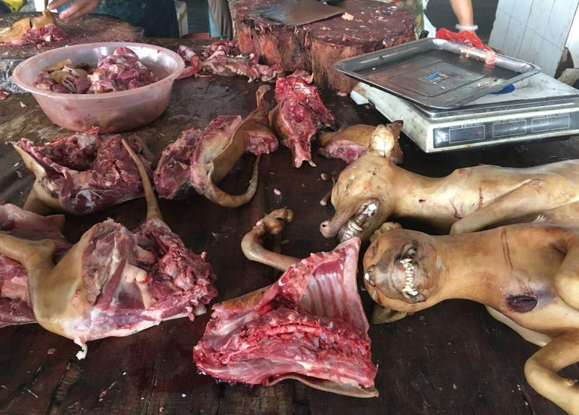

Pets are animals which are kept as companions to humans. Here in the United States pets are treated like children and showered with toys and affection. I can personally attest to this as you can see by my spoiled pug Rosita. There is also a seemingly endless amount of cat and dog pictures on the internet; all showing their love for their pets.
However, pets are not treated in such a kind manner all over the world. For example, in China there is the infamous Yulin Dog Meat Festival. During this festival, thousands of cats and dogs are killed and eaten annually. These dogs are often slaughtered and cooked in the streets of Yulin for all to see. It is important to note that this is considered completely normal to the people who take part in this event. It is apart of the culture in the local area. An awareness of one's own culture is always necessary when discussing a culture which is foreign to one's own.
